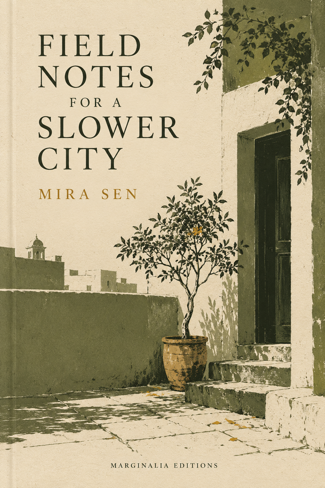
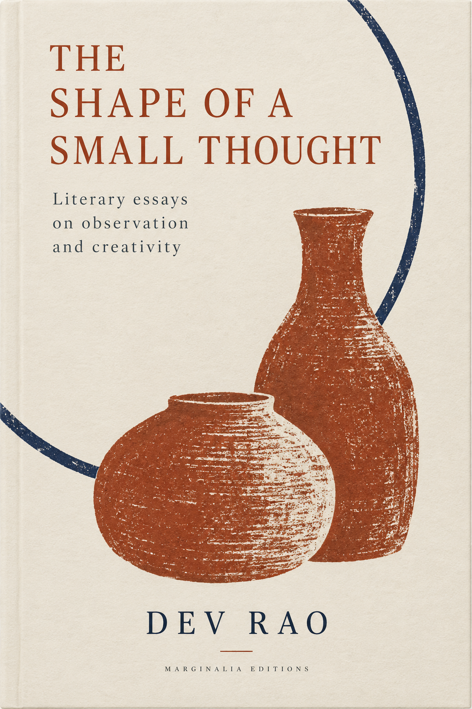

Field Notes for a Slower City
Mira Sen
Paperback · English
₹480
Mira Sen
Paperback · English
₹480
Dev Rao
Paperback · English
₹420
The Everyday Notebook keeps the choice simple: blank paper, a familiar A5 size, and space to begin.
Fictional product facts. One notebook supplied; pencil excluded.
Marginalia brings print books and everyday stationery together. Browse by subject, check the edition, or find a tool for a project of your own.
Edition details sit beside each book. Shipping choices and the final total appear at checkout.
Read shipping & returns